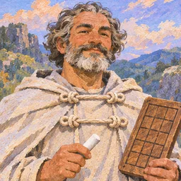
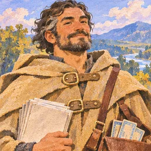
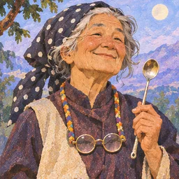

Мостовой Двор впервые приглашён на Турнир Кедровой Луны. Вы составите его сборную, потренируетесь с тремя знаменитыми школами и выступите в общем финале. Чужой красивый стиль можно понять, заимствовать с благодарностью или оставить сопернику. Кубок достанется одной команде либо разделившим первое место; кем вы станете друг для друга, не решает табло.

Если партия изменила план
Перед чтением вступления сверьте место героев, присутствующих людей и предметы с итогом прошлого вечера. Если условия встречи отпали, сыграйте последствия там, где находится партия. Событие по расписанию может произойти за кадром. Герои узнают о нём от тех, кто был на месте.
Вечер 7. Если команда снимает заявку до объявления программы
Освободите её место в расписании. Предложите сыграть разговор с соперниками с трибуны или уйти домой до награждения. В обоих случаях запишите, кто сохранил желание выступить в другой раз.
Группа отказалась от задания
Выступать за школу отказываемся. Станем судьями у чаш, если капитаны согласны. Помогаем у входа тем, кто решил смотреть со зрительских мест. Одна скамья остаётся зрительской. Четыре приглашённые школы всё равно играют финал.
Игроки раскрыли тайну раньше
Сверим круги приглашений с финальной таблицей и спросим организатора, кого отсеивают предварительные встречи. Доступные свидетельства — Четыре одинаковых круга, Чистая финальная таблица. Все четыре школы выйдут в финал с нуля. Предварительные очки дают только очередь выбора места. Просим судью подтвердить разницу между очками и допуском. Никого не отсеивают. Команда тратит пробу на общий возврат, не отнимая у соперников их места.
Партия уступила поле
Пробный круг отдан соперникам, наши очки у их чаши. Записываем проигранные очки и проверяем остающееся право выбора. Разбираем передачу на скамье и меняем капитана по согласию команды. В финал попадаем на исходных условиях, потерянную пробу не переписываем.
Карман ведущего
Для игры без подготовки: что говорят люди, места в стороне от главной дороги и прохожие. Пометки о правде слухов — только для ведущего; сказанное за столом становится фактом мира, лишь когда вы его подтвердите.
Слухи
«В ночь, когда луна встаёт над кедром, ленты сами выбирают победителя: чья выше поднимется, та школа и возьмёт кубок».
Неправда. Суеверие: ленты приподнимаются над ладонью у всех школ одинаково и ничего не считают. Победителя определяют только открытые очки, которые Пао записывает при всех. Удобная болтовня зрителей в восьмом вечере.
«Камень никогда не меняет программу. Что вывесили, то и сделают, хоть небо на голову упади».
Правда. Все соперники держатся опубликованных программ; у Камня это надёжный «Путь» и два риска. Слух лишь повторяет то, что видно на листах трёх капитанов, и ничего не добавляет к счёту.
«Лента шутит даже на финале. Говорят, их капитан и во сне смеётся».
Отчасти правда. Даро правда весёлый на людях, но его утомляет, что от него всегда ждут шуток. Если герои предложат ему занятие без зрителей, он охотно поработает молча. Хорошая зацепка для разговора в третьем или шестом вечере.
«Чаша добрая. Попросите их по-хорошему, они вам и уступить могут».
Неправда. Ами хочет первого места и прямо говорит об этом, если спросить. Уступок из жалости нет ни у одной школы; внимание к партнёру не означает отказа от победы. Слух развеивается в шестом вечере.
«Хозяйка чайной сама когда-то выступала на турнире. Только про это молчит, пока не спросишь».
Правда. Уна была в смешанной команде «Две Скамьи»: один финал проиграли, другой разделили. Она называет себя, когда герои просят конкретный пример смешанной команды; это второй вечер и лист на стене чайной.
«Нэо платит за дорогу тем, кто возьмёт четыре его показа после турнира. И кубок ему для этого не нужен».
Правда. Бюджет Нэо рассчитан на четыре показа и не зависит от победы. Он предпочитает ясное «нет» вежливому согласию. Предложение звучит в четвёртом вечере и возвращается в седьмом и в эпилоге.
«За смелый рисунок дают два очка, а судья, говорят, добавляет ещё одно за красоту, если ей понравится».
Неправда. Никаких очков за красоту или красноречие нет: 1 за надёжное исполнение, 2 или 0 за смелое. Руэ рада послушать красивую речь, но шкалу не меняет. Слух удобно опровергнуть у стола Пао с двумя чашками.
«Песок в Лунном Круге не меняли с первого турнира. Оттого поклоны на нём и светятся».
Отчасти правда. Песок меняют раз в год; это старики уверяют, что поклоны первого турнира в нём остались. Светлые следы поклонов — обычное чудо долины, а не память песка. Колорит для первого и восьмого вечеров.
«Кто впервые проходит Ворота Четырёх Лент, кланяется всем шестам, и своему тоже. Забудешь — весь турнир удачи не будет».
Отчасти правда. Обычай поклона настоящий, а про удачу — присказка: на очки поклон не влияет. Пригодится у ворот в первом вечере; никакой обязанности для героев он не создаёт.
«Первый турнир устроили, чтобы три школы перестали спорить, чей стиль правильнее. С тех пор спорят только на песке, по правилам и с чаем после».
Правда. Так рассказывает вся долина. Слух подводит к главному знанию кампании: стиль — выбранный приоритет с ценой, а не правильный или неправильный характер.
«В Комнате Фонарей нельзя спорить громче, чем горит фонарь. А кто раскричится, у того фонарь сразу гаснет».
Отчасти правда. Правило тишины настоящее, капитаны сами о нём напоминают. Фонари не гаснут от крика, это шутка для новичков. Хороша в шестом и седьмом вечерах, когда спор о программе становится громче.
«Мостовой Двор раньше был просто мостом. По вечерам соседи учили там детей держать равновесие».
Правда. Это история названия двора героев. Слух можно отдать соседу или зрителю, который вдруг узнаёт команду; он даёт повод вспомнить своё и ничего не меняет в счёте.
Места в стороне
Каштановый ряд
Цепочка жаровен вдоль тропы от ворот к Лунному Кругу. Здесь пекут каштаны в золе и продают их в кульках из старых турнирных афиш, так что на каждом кульке видна чья-нибудь давняя заявка. В ночь финала каштаны раздают даром. Торговцы помнят все прошлые финалы по тому, сколько мешков ушло, и спорят об этом громче, чем зрители о победителях.
Камень ожидания
Плоский валун у Ворот Четырёх Лент, на котором команды сидят перед записью. Камень отполирован так, что в нём отражаются ленты на шестах. По примете, кто волнуется, должен посидеть на нём, пока не досчитает до ста, и только потом идти к столу заявок. Дети считают вслух и почти всегда сбиваются на семидесяти.
Родник Трёх Ковшей
Родник у подножия Ступеней Тренировки, обложенный мхом. На нём висят три деревянных ковша, зелёный, оранжевый и бирюзовый, а четвёртый крючок пустует много лет. Говорят, его оставили для школы, которой ещё нет. Сюда приходят напиться все, кто тренируется на ступенях, и здесь же договариваются об учебных обменах, пока вода стекает с подбородка.
Сонная поляна
Мягкая поляна под молодыми кедрами за Чайной Под Корнями. Днём там спят участники, которые выбрали отдых, и никто их не будит: у входа на поляну висит дощечка с нарисованным спящим человечком. Взрослые здесь храпят наравне с детьми. Иногда кто-нибудь просыпается с готовым рисунком в голове и бежит записывать его, пока не забыл.
Лавка красильщицы лент
Тесная лавка на нижней террасе, где окрашивают ленты всех четырёх школ. Под потолком на жердях сохнут мотки, с них капает краска, и пол лавки похож на пёстрый ковёр. Ленты здесь красят в одной бочке одинаковой длины: так красильщица следит, чтобы ни одна школа не получила ленту длиннее других. За бесплатно она вышивает на ленте название команды, если его принести.
Тропа поклонов
Узкая тропа от Лунного Круга к чайной между старых кедров. По обычаю, кто уходит с арены, кланяется на ней один раз, оглянувшись на песок, и на камнях тропы ненадолго загораются светлые следы. После финала тропа светится почти до утра. Соседи из долины приходят сюда смотреть на огоньки, а дети пытаются наступать только на светлое.
Прохожие
Тётушка Сяо
Круглая торговка каштанами в стёганом фартуке, с закопчённым совком и кульками из старых турнирных афиш.
«Горячие! Ешьте, пока ваши не выступают, потом не до каштанов будет».
Может рассказать: Помнит, что в прошлые годы самые громкие болельщики приходили не от сильнейшей школы, а от той, что выступала впервые.
Лин Пустая Ложка
Мальчишка лет десяти, помощник в чайной, с подносом больше себя и полотенцем через плечо.
«Кедровый чай не торопят! Это хозяйка так говорит, а я повторяю».
Может рассказать: Знает, за каким столом в чайной лучше всего видно старые подписанные листы и где висит кубок с двумя названиями.
Бао Длинный Шест
Сухой высокий старик с мерной верёвкой на поясе, каждое утро обходящий шесты у ворот.
«Ни на ноготь выше. Я меряю, а не верю».
Может рассказать: Каждое утро проверяет, что все четыре шеста у ворот одной высоты, и помнит, как однажды шест укоротили при всех.
Мэй Красильщица
Женщина с пёстрыми до локтей руками и мотком мокрой ленты на шее; нитки торчат у неё даже из причёски.
«Название несите сюда, вышью ровно. Кривое только у тех, кто сам вышивал».
Может рассказать: Красит ленты всех четырёх школ одной длины и может вышить название команды, если его принести.
Дедушка Хоу
Сгорбленный зритель с подушкой под мышкой и выцветшими лентами всех трёх школ, повязанными на трость.
«Сорок лет хожу. Хоть бы раз победил тот, за кого я болел».
Может рассказать: Видел много финалов и уверяет, что поздний выход ничего не гарантирует: он видел, как побеждали и первые, и последние.
Ки Тонкая Кисть
Молчаливый переписчик с чернильницей на шнурке и свитком под мышкой; пальцы у него всегда в туши.
«Переписываю только то, что на доске. Слухи пусть пишет кто-нибудь другой».
Может рассказать: Переписывает итоговые таблицы турнира для сёл долины и знает, что цифры с доски у него никогда не расходятся с записью секретаря.
За десять минут до первой игры
- Откройте первый вечер, прочитайте правду мира и участников. Остальные вечера — планы, их исход решают игроки.
- Выберите пакет под фактическое число игроков. Первые три героя — готовое ядро; остальные добавляются по порядку. Возраст игрока не определяет героя.
- Согласуйте темы, длительность и сигнал паузы. Передайте игрокам только players.html; раздатки выдавайте по отдельности после указанного открытия.
- Откройте Мастерскую проекта, создайте личный черновик и импортируйте выбранный JSON через загрузку пакета. Проверьте состав и начало в предпросмотре. Запуск кампании подтверждает ведущий штатным действием.
- Откройте иллюстрацию завязки отдельно. Портреты героев входят в файл для игроков, портреты встречных — в книгу ведущего. Тактические схемы доступны в разделе карт.
Формат и темы
8 вечеров; 150 минут: 10 минут входа и воспоминаний, сцены 35 + 35 + 40 минут, перерыв 10 минут после второй сцены, 20 минут личных итогов и завершения.
В долине Лунного Кедра школы мастерства открыты людям разного возраста. Ленты могут зависать над ладонью, а поклон оставляет светлый след на песке, но чудо не заменяет упражнений и заботы о партнёре. Турнир соединяет художественные эстафеты, рисунки движения и добровольные безопасные спарринги. Все герои используют обычные поддерживаемые классы третьего уровня; ни сюжет, ни допуск не требуют определённого класса или заклинания.
Тёплая соревновательная история с серьёзным желанием выиграть, смешными тренировками и правом огорчиться. Соперник может стать другом и всё равно стараться обойти вас.
- Дружба без обязанности уступить
- Мастерство как совместная практика
- Право на амбицию и на предел своих обещаний
- Достойное поражение без утешительной подмены результата
- Авторство, заимствование и благодарность
Границы
- 12+: подростки и взрослые играют вместе. Нет сексуализированных сцен, смертельных ставок, жестоких травм, унижения за возраст или телосложение.
- Нет реальных боевых инструкций. Движения описываются образно; спарринги используют обычные игровые действия и условный мягкий инвентарь. Потеря хитов означает усталость в спортивном эпизоде, а не подробное описание ранения.
- Ведущий спрашивает о границах публичных выступлений и соревнования. Любую сцену можно заменить описанием с места, письменной заявкой или спокойным упражнением. Слово «стоп» завершает неудобное описание без объяснений.
- Герои разных возрастов не получают романтических обязательств. Взрослый НИП не требует секретов от подростка и не ставит дружбу в зависимость от послушания. Отказ от предложения не наказывается скрыто.
Люди за столом
- В начале каждого вечера сдвиньте жетон первого слова на одно место. Взрослый не становится капитаном по возрасту; возраст игрока не выбирает ему героя или класс. Каждый сначала пишет или говорит собственное намерение, затем группа обсуждает решение. Разрешён пас с последующим возвращением к человеку.
- На каждом рисунке есть общий замысел, подготовка, связь, исполнение и проверка границ. При трёх игроках объединяйте задачи, при семи делите подготовку и связь на пары. Каждый называет один видимый вклад; бросок представителя не делает остальные вклады декоративными: без ответа на предложенную задачу команда сначала уточняет программу.
- Для одного вопроса предлагайте простой вход «что хочется попробовать?» и глубокий «какую цену этого выбора принимаешь?». Оба ответа равноценны. Не просите игрока изображать физическое упражнение или произносить речь перед столом: описание, записка и выбор из двух вариантов достаточны.
- При разделении на площадки разрешайте одну содержательную заявку каждого, затем возвращайте всех к общему столу или колоколу. Ведущий собирает заявки параллельно и разрешает их одним кругом; не оставляйте одну пару разыгрывать десять минут, пока остальные ждут.
- При отсутствии игрока его герой отдыхает или помогает за кадром без бросков и без голоса в обязательствах. Число участников сцены и противников подбирайте по фактически присутствующим 3–7. При менее трёх проведите необязательную беседу или перенесите зачёт, не решайте финал за отсутствующих.
- Первые три героя достаточны для любой сцены. Задачи героев четвёртого–седьмого мест при их отсутствии предлагают всему столу; знание стиля, решение о договоре и финальный выбор никогда не требуют конкретного класса, заклинания или биографии.
- Перед броском объявляйте ставку и счёт, после него записывайте результат при всех. Не превращайте успех состязания в проверку нравственности. После проигрыша сначала дайте место разочарованию, затем предложите эпилог; не вручайте тайком кубок доброты вместо настоящего результата.
Масштабирование группы
3 игроков
Основной состав — Тао, Мира, Орен. На каждом рисунке один предлагает замысел, один готовит условия, один исполняет или сверяет программу; задачи меняются по кругу. Один решающий бросок на команду. В добровольном спарринге 2 соперника, по 12 хитов.
4 игроков
Добавьте Сэю или любого свободного героя. Четвёртый получает отдельную задачу связи и право первым оспорить план, не обязан быть помощником. Один решающий бросок на команду. В спарринге 3 соперника, по 14 хитов.
5 игроков
Пять участников распределяют замысел, подготовку, связь, исполнение и сверку границ. Все сначала подают короткие заявки; у исполнителя нет дополнительного голоса. В спарринге 3 соперника, по 16 хитов.
6 игроков
Две тройки параллельно готовят разные варианты, затем каждый называет цену своего варианта и группа выбирает. Вернитесь к общему столу до решающего броска; он один для всей команды. В спарринге 4 соперника, по 18 хитов.
7 игроков
Тройка и четвёрка готовят варианты по разным сторонам поля; в общей фазе чередуйте говорящих из подгрупп. Разделите связь и подготовку на пары, каждому оставьте отдельное решение. В спарринге 5 соперников, по 20 хитов.
Первое чтение вслух
Долина Лунного Кедра лежит в зелёной горной чаше, и с любого перевала её видно целиком: четыре учебных двора на террасах, чайные навесы на склонах, большая общая площадь и над всем этим — старый кедр, такой огромный, что между его корнями умещается целая чайная. Раз в году, когда полная луна встаёт точно над его кроной, в долине проводят Турнир Кедровой Луны. Говорят, первый турнир устроили, чтобы три школы перестали спорить, чей стиль правильнее, — и с тех пор спорят только на песке Лунного Круга, по правилам и с чаем после. Ваш Мостовой Двор маленький: деревянный настил над ручьём, длинная скамья, медный чайник и доска для имён, на которой всегда хватает места. На турнир его не звали ни разу. А сегодня утром на воротах висит приглашение с четырьмя пустыми кружками — одинаковыми, ровно одного размера. Три соседних двора — Тихий Камень, Летящая Лента и Пустая Чаша — прислали свои ленты: тёмно-зелёную, оранжевую и бирюзовую. Они такой же длины, как ваша, хотя названия этих школ знают по всей долине, а ваше — разве что соседи. Ленты чуть приподнимаются над столом, будто прислушиваются. Под приглашением кто-то приписал тушью, твёрдым почерком: «Привезите название команды. Остальному место найдётся». Пахнет хвоей, тёплым деревом и мятой. Из чайника вырывается пар, похожий на маленького кедрового журавля, делает круг над скамьёй и тает. Название пока не написано, и разговор о нём ещё никто не начал.
Правда мира · только ведущему
- Заговора нет. Четыре школы приглашены заранее и на равных участвуют в финале. Три предварительные встречи не отсекают проигравших: их сумма определяет очередь выбора свободного места выступления (первое–четвёртое) и порядка трёх собственных рисунков. Равенство предварительных очков разрешает открытый жребий. Место выступления сохраняется во всех трёх финальных кругах; каждый порядок рисунков доступен нескольким школам. Безопасность подтверждают разговором и пробой; при ошибке пробу повторяют без штрафа к результату.
- Сердце истории: стиль школы — выбранный приоритет с ценой, а не характер человека и не лестница силы. Камень умеет удерживать ясный общий план, Лента менять его, Чаша слышать партнёра. Смешанная команда вправе заимствовать приёмы с признанием авторства. Это знание независимо дают история прежнего финала, открытые показательные упражнения и прямые разговоры с капитанами.
- В каждой зачётной встрече три рисунка: «Путь», «Передача», «Ответ». Команда до проверки выбирает надёжное исполнение за 1 очко без броска или смелое за 2 очка при успехе и 0 при неудаче. Для смелого исполнения один добровольный представитель делает уместную стандартную проверку навыка, Сл 13. Остальные получают конкретные задачи подготовки и описывают свой вклад. Помощь возможна лишь по обычным правилам; она не складывается. Внутри встречи нельзя дважды использовать один навык для решающего броска. Никто не обязан бросать.
- Соперники играют по той же шкале. Их план и бонус +3 объявлены до выбора героев; смелые попытки ведущий бросает открыто с Сл 13, без скрытой корректировки и без преимущества. Камень выбирает надёжно/смело/смело, Лента — смело/смело/надёжно, Чаша — смело/надёжно/смело. Это намерения, не предсказанные результаты. При смене порядка рисунков порядок риска остаётся привязан к их названиям. В тренировке можно договориться о другой программе заранее, в зачёте используется опубликованная.
- Предварительная встреча сравнивает сумму 0–6 обеих команд и сохраняет реальные очки героев. Финал начинает счёт заново: четыре команды выполняют свои три рисунка по очереди. Сравниваются финальные суммы, а не возраст, красота речи или прежние победы. При равенстве лидеры могут все согласиться на общий титул либо все исполняют один дополнительный смелый рисунок с Сл 13 и бонусами своих обычных навыков. Если равенство сохраняется, титул общий. Ни НИП, ни ведущий не выбирают победителя заранее.
- Тренер Ива не знает универсально лучшей программы. Её предложение вести открытые занятия после турнира — самостоятельный выбор времени, а не награда за нравственность. Спонсор Нэо честно предлагает оплатить будущие поездки за четыре публичных выступления. Отказ не закрывает турнир, согласие не делает команду плохой, результат не требует подписывать обязательство.
- Все турнирные очки и планы — ручные записи ведущего для художественных сцен. Они не импортируются как новые автоматические правила. Добровольные тактические спарринги не добавляют очков и не заменяют опубликованную проверку; отказ от них не лишает сведений, приглашения или тренировки. Прекращение спарринга доступно по обычному выходу из сцены или объявлению сдачи, которое судья сразу принимает.
Восемь вечеров
- 1. Четыре пустых круга — Назвать команду, установить равное участие и понять спортивный договор до первого результата.
- 2. Вес общей паузы — Понять первую школу через практику, увидеть исторический пример смешанного стиля и выбрать собственную учебную задачу.
- 3. Встреча с Летящей Лентой — Провести первую настоящую зачётную встречу, увидеть цену свободного рисунка и пережить результат без подмены счёта.
- 4. Свободный день тоже выбор — Выбрать цену учебного времени, освоить законное заимствование и отделить будущие обещания от желания выиграть сейчас.
- 5. Камень умеет менять форму — Проверить собственную программу во встрече с Камнем и отделить взаимное обучение от обязанности уступить.
- 6. Друг тоже хочет кубок — Услышать амбицию Чаши, завершить предварительные встречи и принять честную конкуренцию между будущими друзьями.
- 7. Цена выбранной программы — Проверить полную таблицу, выбрать расписание и собрать финальную программу с ясной ценой риска и личных обещаний.
- 8. Финал под Кедровой Луной — Сыграть настоящий финал по открытому счёту, принять его результат и завершить личную историю каждого участника.
Места
Долина Лунного Кедра
Зелёная горная чаша, где на террасах стоят четыре учебных двора, на склонах — чайные навесы, а внизу — большая общая площадь. Над долиной поднимается старый кедр; раз в году полная луна встаёт точно над его кроной, и в эту ночь здесь проводят турнир. Пахнет хвоей, дымом очагов и мокрой травой.
Мостовой Двор
Домашняя площадка сборной: деревянный настил над быстрым ручьём, медный чайник, длинная скамья и доска, на которой хватает места каждому имени. Двор назвали Мостовым, потому что когда-то здесь был просто мост, где соседи по вечерам учили детей держать равновесие. Настил до сих пор чуть пружинит под шагами.
Ворота Четырёх Лент
Вход на турнир: четыре одинаковых шеста одной высоты, и на каждом вьётся лента своей школы, не выше и не ниже других. Рядом открытый стол заявок, где судья принимает имена, и большая доска расписания, расчерченная мелом. По обычаю каждая команда, впервые проходя ворота, кланяется всем четырём шестам — и своему тоже.
Лунный Круг
Общая арена под открытым небом: круг белого песка с меловыми рисунками, мягкие перегородки из стёганой ткани и широкие проходы к зрительским скамьям. После каждого поклона на песке остаётся светлый след и медленно гаснет. Песок здесь меняют раз в год, но старики уверяют, что в нём ещё лежат поклоны первого турнира.
Двор Тихого Камня
Светлый двор, выложенный серыми плитами, с ровными рядами подушек для сидения. На стене висят разные варианты одного общего упражнения, нарисованные учениками разных лет, а посередине лежит большой гладкий камень, к которому по обычаю школы возвращаются после каждого рисунка. Здесь говорят негромко и редко перебивают.
Галерея Летящей Ленты
Открытая галерея на краю склона, где длинные тканевые дорожки меняют цвет на ветру — с оранжевого на алый, с алого на золотой. Скамейки здесь не прибиты, их переставляют для зрителей как угодно, и каждый вечер галерея выглядит по-другому. В школе Ленты шутят, что ни один их рисунок не повторялся дважды, даже когда очень старались.
Двор Пустой Чаши
Круглая площадка, обнесённая низкой стенкой, вдоль которой стоят расписанные чаши — по одной у каждого места. Возле каждой чаши лежит карточка для письменного ответа: в этой школе считают, что написанное слово весит столько же, сколько сказанное. Посередине оставлен пустой круг, в который никто не входит без приглашения.
Чайная Под Корнями
Чайная, устроенная прямо между корнями живого кедра: корни служат ей стенами, а крона — крышей. На стенах висят командные портреты тушью, рисунки и подписанные турнирные листы прошлых лет, пожелтевшие, но целые. Пахнет смолой, жареным ячменём и кедровым чаем, который здесь заваривают из молодых игл.
Ступени Тренировки
Низкие широкие ступени, вырубленные в склоне, с ровным боковым проходом для тех, кому удобнее без ступенек. Одно и то же упражнение здесь легко показывать с разной высоты или сидя, поэтому сюда приходят все четыре школы. У края лежит толстая книга, куда записывают упражнения.
Комната Фонарей
Тихая комната под низким потолком, где команды составляют программы: четыре одинаковых стола, стопки цветной бумаги, песочные часы и расписание перерывов на стене. Под потолком висят бумажные фонари всех четырёх цветов, и по старому правилу здесь не спорят громче, чем горит фонарь.
Ива Утренний Шаг

39 лет. Короткий серый плащ, медная чашка на поясе и привычка освобождать соседнее место на скамье. Наставница Мостового Двора, которая приехала помогать с расписанием и тренировками. Не занимает место в игровой команде.
Место: Мостовой Двор
Намерение
Чтобы участники нашли собственный способ работать вместе и честно назвали, чего хотят от турнира.
Собственные знания
- Приглашение даёт команде равный допуск к финалу после общей пробы безопасности.
- Двор способен проводить бесплатный открытый урок раз в неделю, если кто-то добровольно возьмёт подготовку.
- Её собственная команда когда-то проиграла, выбрав слишком осторожную программу.
Секрет или личное убеждение
Ива боится, что её любовь к спокойным упражнениям сдерживает амбициозных учеников. Это её сомнение, а не доказательство слабости двора.
Граница и раскрытие
Не знает планов чужих команд и не выбирает представителя за игроков. Не выдаёт своё предпочтение за единственный правильный путь.
Если спросить о цене осторожности или о её первом турнире, рассказывает о своём поражении и предлагает сверить любое её мнение с правилами.
Руэ Ровная Черта

56 лет. Белая накидка с четырьмя одинаковыми узлами, толстый мел и дощечка для крупного счёта. Главная судья объясняет правила до начала выступления и принимает письменные заявки.
Место: Ворота Четырёх Лент
Намерение
Провести состязание, в котором участники заранее понимают цену каждого решения.
Собственные знания
- Официальную шкалу 1 без броска или 2 при успешной смелой попытке с Сл 13.
- Порядок выбора программ и правила равенства очков.
- Любую программу можно описать с места без обязательной физической демонстрации.
Секрет или личное убеждение
Руэ считает общую победу полноценным спортивным исходом, но не станет предлагать её одной команде тайно. Это личное мнение, а не готовый финал.
Граница и раскрытие
Не знает, кто выиграет; не даёт очки за моральное поведение вместо выполнения объявленной программы.
На прямой вопрос показывает запись правила и разыгрывает пример с пустыми чашами; секретных исключений для любимчиков не существует.
Сэн Квадратный Лист

17 лет. Тёмно-зелёная лента, прямоугольная записная книжка и очень аккуратно сложенные запасные полотенца. Капитан Тихого Камня, избранный своей командой за умение ясно распределять работу.
Место: Двор Тихого Камня
Намерение
Выиграть, сохранив понятную программу, которую согласились исполнять все товарищи.
Собственные знания
- Камень лучше справляется, когда каждый заранее знает точку возвращения к общему плану.
- В опубликованном зачёте Камень берёт 1 очко за «Путь» и рискует в «Передаче» и «Ответе».
- Его товарищ Фэн умеет предлагать запасной вариант без длинного обсуждения.
Секрет или личное убеждение
Сэн хотел бы попробовать более свободный рисунок Ленты, но пока не придумал, как предложить его своим без ощущения, будто прежняя работа обесценена.
Граница и раскрытие
Знает только собственные планы и открытые правила. Не представляет подростков как единую сторону и не уступает из дружбы.
При спокойном вопросе о непривычном стиле признаёт любопытство и предлагает взаимный пробный урок без обязательства применять его в зачёте.
Даро Летящая Скоба

32 лет. Оранжевая лента, разномастные мягкие туфли и карточки с короткими названиями упражнений. Капитан Летящей Ленты, любит неожиданные решения и всегда заранее показывает знак окончания упражнения.
Место: Галерея Летящей Ленты
Намерение
Доказать результатом, что свобода программы совместима с вниманием к партнёрам.
Собственные знания
- Лента оставляет внутри свободной программы заранее согласованные паузы.
- В зачёте Лента рискует в «Пути» и «Передаче», а «Ответ» выполняет надёжно.
- Его команда готова обменять один открытый урок на один урок чужого двора.
Секрет или личное убеждение
Даро утомляет ожидание постоянных шуток. Иногда ему хочется просто молча выполнить хороший рисунок; весёлый образ не обязан сопровождать каждую встречу.
Граница и раскрытие
Не знает личных мотивов игроков и не заставляет их развлекать публику. Дружеский урок не означает обещание проиграть.
Если герои замечают паузу или предлагают занятие без зрителей, объясняет её назначение и просит не путать импровизацию с постоянной громкостью.
Ами Белый Край

24 лет. Светлая широкая рубаха, бирюзовая лента и чашка с нарисованным открытым окном. Капитан Пустой Чаши. Перед ответом спрашивает, услышал ли собеседник своё намерение правильно.
Место: Двор Пустой Чаши
Намерение
Выиграть общим вниманием, не сводя собственную школу к вежливому согласию со всеми.
Собственные знания
- Чаша использует короткие подтверждения согласия и допускает письменный ответ вместо произнесённого.
- В зачёте Чаша рискует в «Пути» и «Ответе», выбирая надёжную «Передачу».
- Учебный рисунок можно прекратить без обвинения партнёра.
Секрет или личное убеждение
Ами тревожит, что окружающие хвалят Чашу только за доброту. Ей хочется, чтобы её признали серьёзной соперницей с настоящим желанием победить.
Граница и раскрытие
Не читает мысли и не знает, как герои поступят после дружеского разговора. Не снимается с финала ради их настроения.
Если спросить, чего она сама хочет от турнира, прямо отвечает «первого места» и приглашает уважать это желание без необходимости ссориться.
Фэн Короткая Черта

14 лет. Зелёные манжеты, короткий карандаш за ухом и веер из нескольких простых карточек. Участник Камня, часто предлагает изменения маленькими рисунками.
Место: Ступени Тренировки
Намерение
Чтобы его план оценили по ясности и пользе, а не по возрасту или смелости голоса.
Собственные знания
- Его карточка показывает общий момент возврата к исходной договорённости.
- Сэн согласовал открытый обмен учебными вариантами.
- На ступенях есть ровный проход, позволяющий участвовать без подъёма.
Секрет или личное убеждение
Фэн готов показать свой запасной рисунок другим школам, если его подпишут его именем. Он не считает рисунок опасным секретом и не просит покровительства.
Граница и раскрытие
Не знает решения капитана на будущий финал сверх опубликованной программы. Не играет роль беспомощного ребёнка, которого нужно спасать.
На просьбу показать карточку предлагает посмотреть вместе и сразу называет условие подписи; согласие или отказ героев принимает спокойно.
Нэо Медный Узел

41 лет. Песочный плащ с большими застёжками, ровная стопка одинаковых листов договора и сумка дорожных билетов. Организатор выездных показов. Предлагает оплатить поездки команды, если та добровольно возьмёт четыре выступления после турнира.
Место: Комната Фонарей
Намерение
Собрать разнообразную программу и заранее знать, сколько выступлений действительно состоится.
Собственные знания
- Условия собственной программы: четыре согласованные даты, оплата дороги, право отказаться до подписания.
- Согласие каждого участника требуется отдельно; общий капитан не подписывает за остальных.
- Открытые еженедельные занятия Ивы могут пересекаться по времени с поездками.
Секрет или личное убеждение
Нэо предпочёл бы услышать ясное «нет», чем получить согласие из неловкости. Его бюджет рассчитан на четыре показа и не зависит от победы в турнире.
Граница и раскрытие
Не влияет на судей и не знает исхода соревнования. Не обещает коммерческого успеха или будущих наград как факта.
Когда герои спрашивают о цене или отказе, выдаёт полный короткий текст и предлагает вернуться после финала; срок не истекает посреди сцены.
Уна Чайный Круг

67 лет. Тёмная косынка в белых точках, длинная ложечка и очки на пёстром шнуре. Хозяйка чайной хранит подписанные листы прошлых турниров и разрешает читать их за любым свободным столом.
Место: Чайная Под Корнями
Намерение
Чтобы гости различали память о результате и легенду, которая со временем приклеилась к нему.
Собственные знания
- Составы, программы и реальные счета двух турниров, в которых участвовала лично.
- Её команда заимствовала упражнения у трёх школ с открытой благодарностью.
- Победители одного из тех турниров сохранили собственный отдельный стиль.
Секрет или личное убеждение
Уна сама была в смешанной команде «Две Скамьи», проигравшей один финал и разделившей другой. Ей приятно вспоминать людей, а не притворяться непогрешимым мудрецом.
Граница и раскрытие
Не знает чувств всех прежних участников и не выводит из истории гарантированный рецепт победы для героев.
Если попросить конкретный пример смешанной команды, показывает подписанный лист, затем называет себя; рассказ можно получить без угадывания её биографии.
Пао Чистое Поле

19 лет. Светло-коричневая жилетка, два мела за ухом и складная дощечка с крупными цифрами. Секретарь турнира записывает результаты вслух и даёт проверить запись до следующего выступления.
Место: Лунный Круг
Намерение
Вести счёт так, чтобы его было легко понять даже с последнего ряда.
Собственные знания
- Текущие объявленные результаты и порядок выступлений после их реального проведения.
- Шкалу очков и правило общего титула при сохраняющемся равенстве.
- Место каждого опубликованного листа на доске.
Секрет или личное убеждение
Пао впервые ведёт общий финал и предпочитает, чтобы участники сверяли записи сразу. Это нормальная осторожность, а не признак подлога или будущей ошибки.
Граница и раскрытие
Не хранит заранее записанных победителей. Не превращает технический вопрос к табло в расследование мошенничества.
На просьбу сверить очки читает исходные записи вместе с героями. Если ведущий ошибся в арифметике, исправляет число открыто без выдуманного саботажа.
Возможные финалы
Кубок с вашим названием
Условия: Команда набрала единолично наибольшую сумму финала после предусмотренного разрешения равенства.
Команда получает настоящий кубок. Каждый называет человека, чему-то его научившего, и выбирает, чему теперь учиться самому. Другие школы признают счёт и сохраняют собственные амбиции.
Цена: Выигранное внимание нужно распределить: публичные поездки, открытый двор и свободное время несовместимы в полном объёме. Обязательны лишь обещания, которые герои действительно приняли.
Одна строка на двоих
Условия: Лидеры согласились разделить титул либо после дополнительного рисунка сохраняется равенство на первом месте.
На кубке записывают все победившие школы. Герои решают, где он будет храниться по очереди; это практический разговор равных победителей, а не суд о достоинстве.
Цена: Нельзя заявлять единоличную победу. Совместная церемония занимает вечер, который можно было провести только своей командой.
Возвращение без кубка
Условия: Другая школа получила большую финальную сумму.
Победителю вручают кубок по настоящему счёту. Герои выбирают следующую тренировку, новое название двора или паузу в соревнованиях. Друг, общий приём и исполненное личное обещание остаются реальными результатами.
Цена: Желаемая победа не состоялась. Разочарование не отменяют моралью; каждый вправе радоваться дружбе и всё ещё хотеть реванша.
Своя мера участия
Условия: Команда после обсуждения добровольно снимает финальную заявку либо кто-то отказывается выступать, а оставшихся меньше трёх.
Титул разыгрывают оставшиеся школы без героев. Их совместная история завершается собственным показом, письмом соперникам или возвращением домой; ведущий предлагает всем личный эпилог.
Цена: Кубок и официальный результат недоступны. Решение не объявляют скрытой высшей победой; причины и отношения остаются выбором игроков.
Раздатки · выдавать постепенно
- Приглашение Мостовому Двору — Вечер 1, после чтения открытия; вручить приглашение перед выбором названия.
- Что считает турнир — Вечер 1, когда Руэ объясняет зачёт; продублировать при первом зачёте тем, кто отсутствовал.
- Три открытых наблюдения — Вечер 4, после обсуждения уже показанных Камнем и Лентой упражнений и открытого объяснения Ами.
- Запись Уны — Вечер 2 или 4, после разговора у исторического листа; выдавать только если герои приняли предложение прочитать его.
- Открытый рисунок Фэна — Вечер 4, если герои обсуждали карточку Фэна; выдать независимо от решения её использовать.
- Предложение четырёх поездок — Вечер 4 или 7, когда Нэо лично разъяснил условия; не помещать в стартовый набор.
- Финальная программа — Вечер 7, после открытой сверки предварительных очков и перед выбором порядка рисунков.
- Место для следующего шага — Вечер 8, только после определения реального результата или добровольного снятия команды.
Как читать игровые проверки
Проверки характеристик и навыков, переговоры, часы и последствия из книги разрешает ведущий. Они не являются дополнительными автоматическими правилами приложения. Улики доступны без обязательного успешного броска. Подготовленные встречи начинаются только по решению ведущего; исходы и эпилоги заранее не записаны.
Статус подготовки
Авторская кампания подготовлена отдельным агентом, запрошенным как GPT-6 Astra / max. Проверки пакетов и игровых границ описаны в verification.json и общем отчёте. Живой плейтест с людьми ещё не проведён. Локальная папка с исходниками и книгой предназначена ведущему.